作者：创世魂
● 内容(读写)
帮助文档如下图：
通过本属性可用于设置编辑框显示的内容和窗口组件的“标题”属性作用相同。
同名的读属性可以读取编辑框的内容。
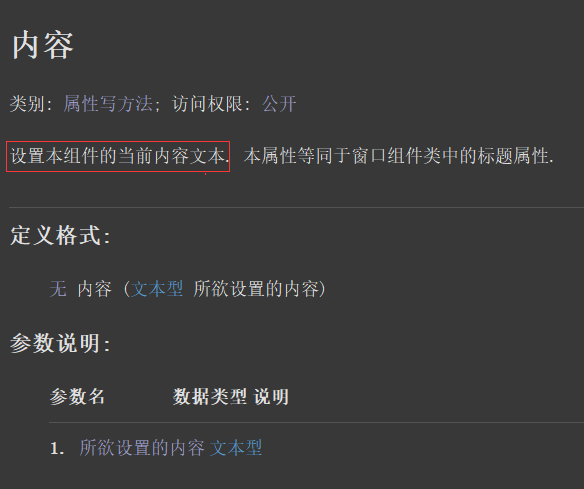
界面设计如下图：
在窗口上放两个按钮和一个编辑框组件。
选中编辑框组件就可以在右侧属性栏设置内容，设置后会立刻显示在设计器上。
本操作相当于给编辑框设置了初始值，软件运行后就会显示此内容。
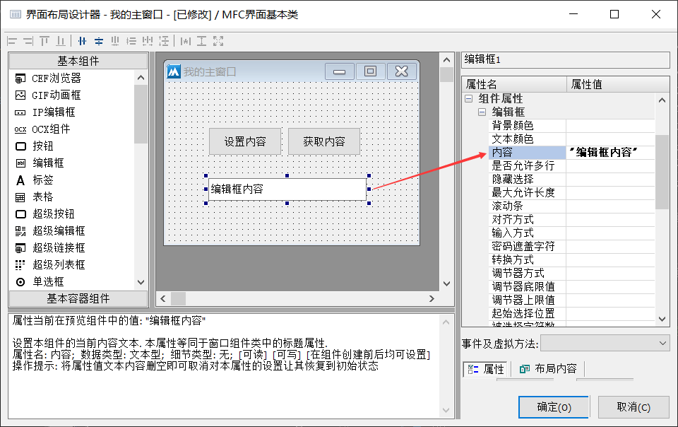
代码编写如下图：
1、添加按钮被单击事件，并分别判断来源对象。
2、按钮1点击后设置编辑框的新内容。
3、按钮2点击后取出编辑框的内容显示在信息框中。
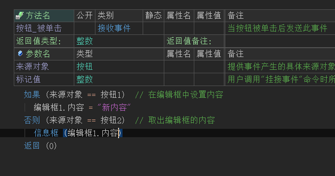
运行效果如下图：
当软件运行后，点击设置内容可以更新编辑框的内容。
点击获取内容就可以取出编辑框内容。
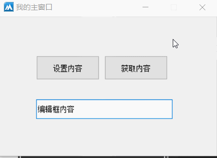
● 左边空(读写)
帮助文档如下图：
通过本属性可以设置编辑框左边拥有一段空白，单位像素。
同名的读属性可以读取编辑框的内容。
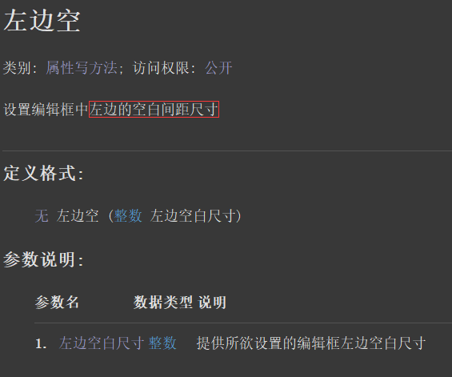
代码编写如下图：
1、按钮1被点击后设置左边空白为20像素。
2、按钮2点击后取出左边的空白距离。
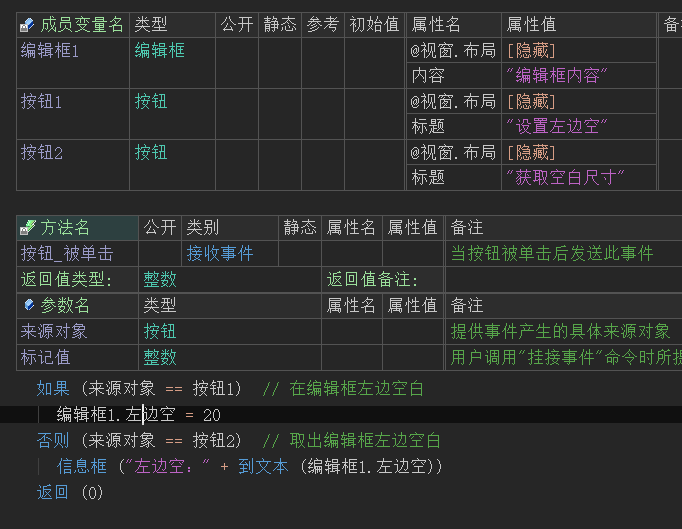
运行效果如下图：
可以看大当按钮点击后，编辑框左边会出现明显的空白。
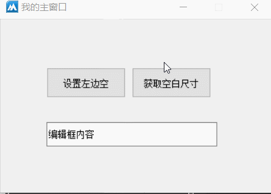
● 右边空(读写)
帮助文档如下图：
通过本属性可以设置编辑框内容右边出现空白。
同名的读属性可以读取空白尺寸。
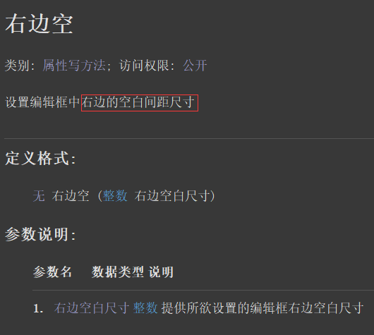
代码编写如下图：
1、按钮1点击后设置本属性值为20像素。
2、按钮2点击后取出右边空白。
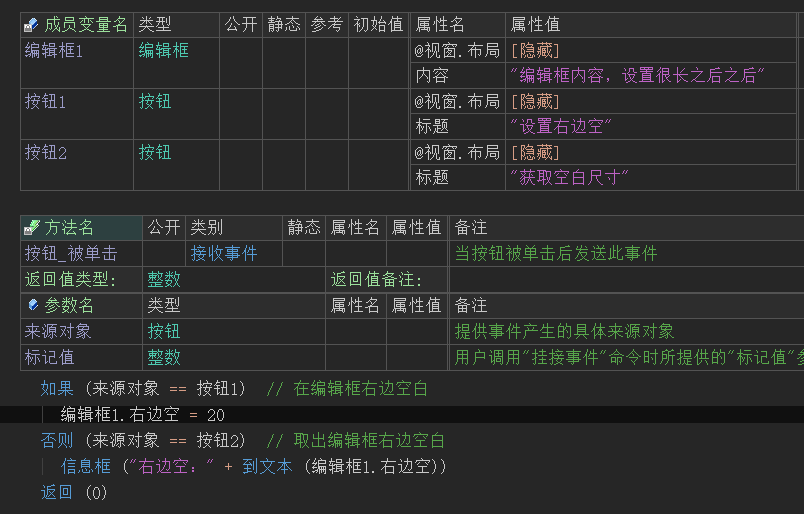
运行效果如下图：
最终可以看到当按钮点击后，拖动编辑框内容时可以看到右边出现空白区域。
提示：效果没有立刻显示出来是因为当前编辑框是单行模式。
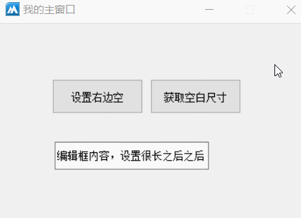
● 密码遮盖字符(写)
“输入方式”帮助文档如下图：
本属性用于设置编辑框的常用输入方式。
调用方式：“编辑框输入方式.XX”,如果在表格的属性栏使用，直接下拉选择即可。
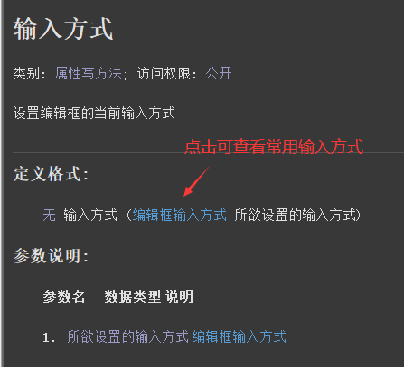
“密码遮盖字符”帮助文档如下图：
当设置“输入方式”为“密码输入”的时候，通过本属性可以设置密码显示字符。
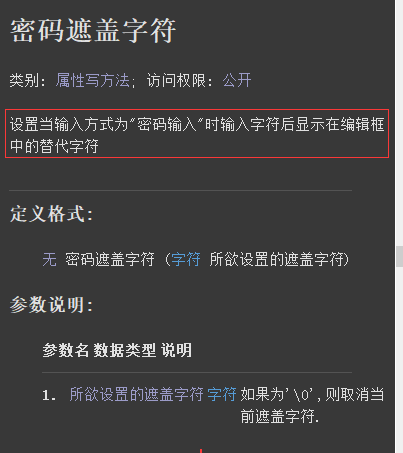
代码编写如下图：
当按钮1被单击后，设置输入方式为密码输入。
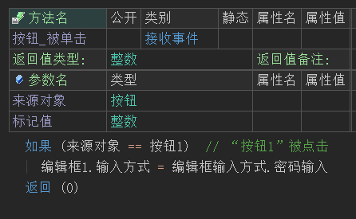
运行效果如下图：
可以看到编辑框中的文本立刻变成了星号，这也是默认显示字符。
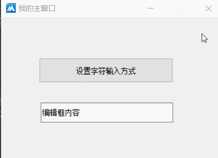
如果在表格属性栏中设置“密码遮盖字符”属性，设置为'&'。
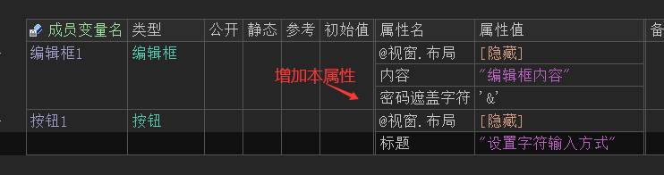
再次运行软件点击按钮后，编辑框的内容都会统一的变成“&”。
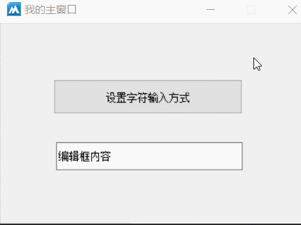
●对齐方式(写)
帮助文档如下图：
通过本属性可以设置编辑框内容的横向对齐方式。
需要注意的是，本属性只能在设计器的属性栏或者组件变量的属性栏中设置。
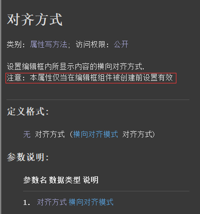
界面设计如下图：
本属性值共有三个属性，选中后就可以直接在设计器中看到预览效果。
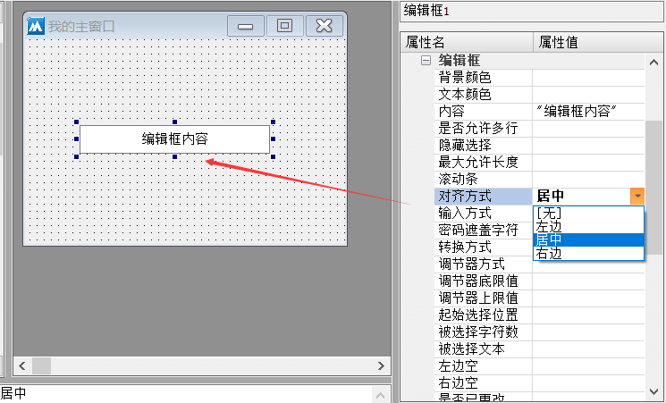
代码编写如下图：
保存布局后会自动生成“对齐方式”属性。
当然也可以不打开设计器，直接在代码区域增加本属性效果也是一样的。
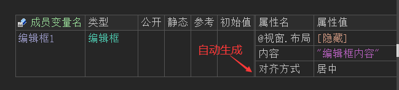
运行效果如下图：
运行后可以看到，编辑框的内容也是居中状态。
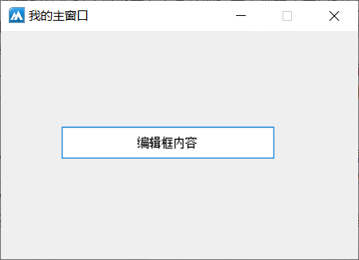
● 文本颜色(写)
帮助文档如下图：
通过本属性可以设置编辑框的文本颜色。
可以使用“颜色类.XX”中的常量值，也可以使用“0x0000FF”十六进制文本颜色。
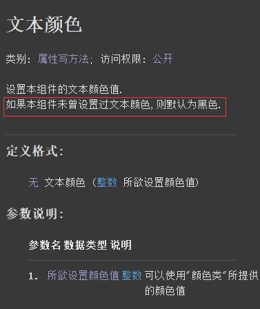
代码编写如下图：
按钮1点击后，设置文本颜色属性为“颜色类.红色”。
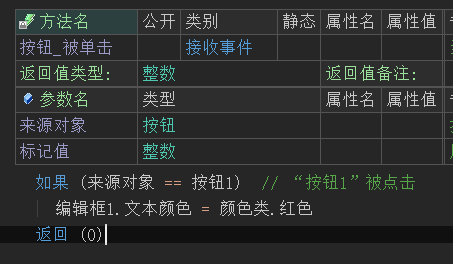
运行效果如下图：
按钮点击后，编辑框的内容将修改为红色。
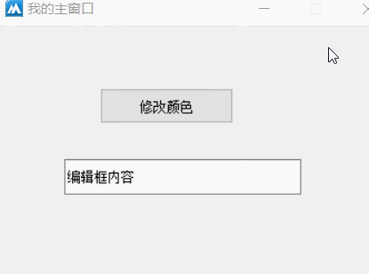
● 是否允许多行(写)
帮助文档如下图：
通过本属性可以设置编辑框为多行模式。
注意：本属性只能在属性栏设置，不支持按钮被单击后等形式的动态调用。
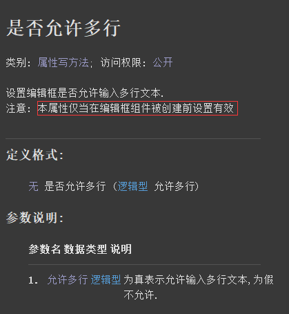
界面设计如下图：
在界面设计器中调整属性可以动态预览设计效果。
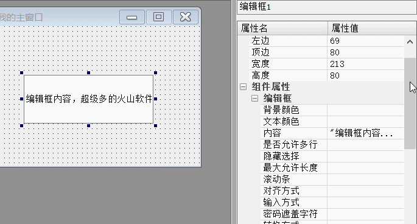
运行效果如下图：
如果属性设置为真，运行后也会和设计预览效果一致，为多行显示。
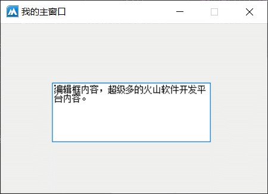
●是否已更改(读写)
帮助文档如下图：
通过本写属性可以动态设置当前编辑框是否被更改的标记。
同名的读属性可以读取当前编辑框是否被更改的标记。
通过任何形式修改编辑框的内容，读属性都会返回真，只有手动设置为本写属性为假后，读属性才会返回假。
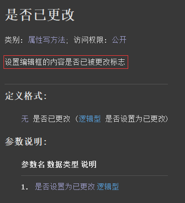
代码编写如下图：
按钮1被点击后，判断是否已经更改并弹出对应的信息框，如果被更改就手动重置一下更改标记。
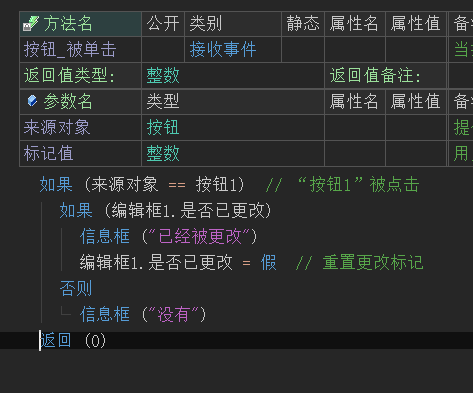
运行效果如下图：
可以看到当手动修改编辑框内容后才会提示“已经被更改”。
但是随后立刻点击按钮依然会提示“没有”。
这是因为已经在代码中设置了本属性为假。
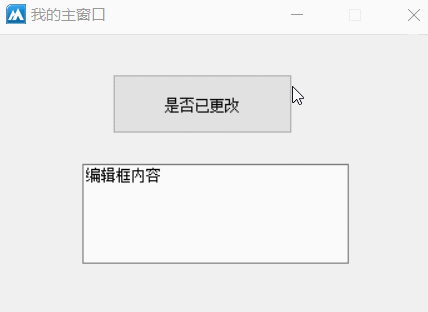
● 最大允许长度(写)
帮助文档如下图：
通过本属性可以设置编辑框的最大输入长度。
比如设置3，那么在编辑框中最大只能输入3个字符。
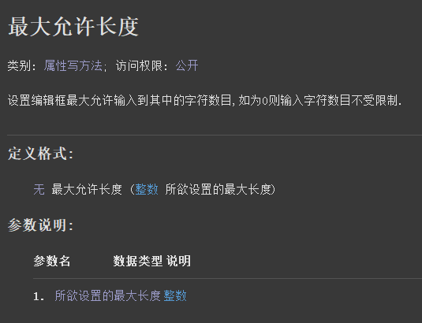
代码编写如下图：
按钮点击后设置本属性为3。
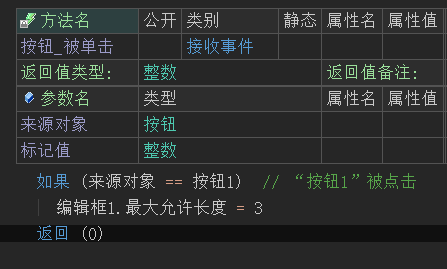
运行效果如下图：
可以看到按钮点击前编辑框内容可以正常输入，点击后最大只能输入三位。
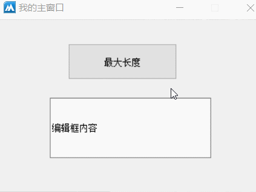
● 滚动条(写)
帮助文档如下图：
本属性用于设置编辑框的显示的滚动条类型，在火山中默认为不显示任何滚动条。
注意：本属性只能在组件变量的属性表中调用，并且调用后无法动态修改。
注意2：本属性需要配合“是否允许多行”属性一起使用。
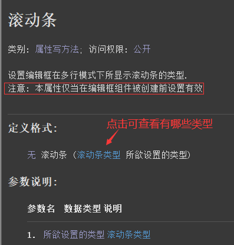
代码编写如下图：
在编辑框组件的属性栏调用本属性设置为纵向滚动条。
并且同时需要设置“是否允许多行”属性为真。
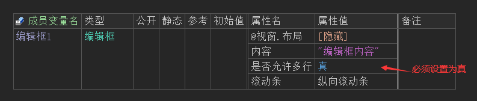
运行效果如下图：
当软件运行后可以看到在编辑框右侧出现了换一个滚动条。
同时在编辑框内容增加的时候，编辑框的内容可以进行滚动显示操作。
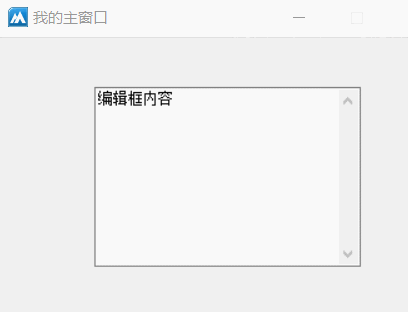
● 背景颜色(写)
帮助文档如下图：
通过本属性可以修改编辑框组件的背景色，默认为白色。
颜色可以使用颜色类中定义的常量值，里面记录了一些常用的颜色。
也可可以使用0x0000FF，这种十六进制颜色值来表示。
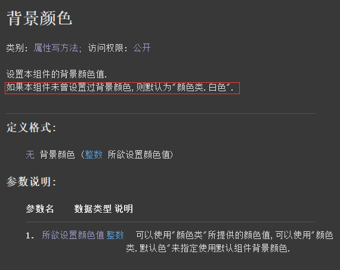
代码编写如下图：
按钮点击后修改本属性为蓝色。
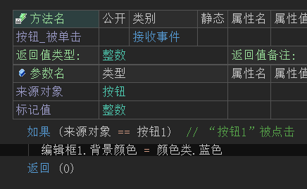
运行效果如下图：
最后可以看到编辑框被修改为蓝色。
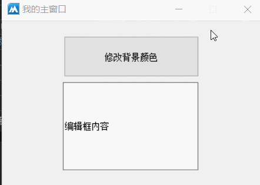
● 被选择文本 (写)
帮助文档如下图：
通过本属性可以替换编辑框中被选择区域的指定文本。
注意：如果没有选择区，将会直接在光标位置插入文本。
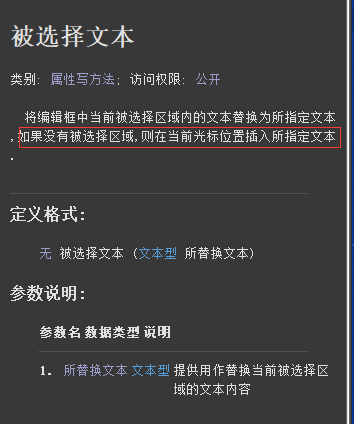
代码编写如下图：
按钮1被点击后执行被属性，设置一个“火山”。
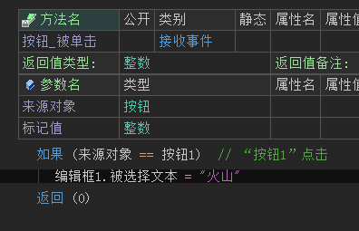
运行效果如下图：
最终可以看到当没有选择区的时候会执行插入文本操作，如果有选择区的话，会执行替换操作。
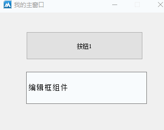
● 被选择文本(读)
帮助文档如下图：
通过本属性可读取当前被编辑框中被选择区域的文本。
如果没有选择区将会返回空文本。
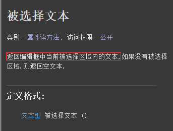
代码编写如下图：
按钮点击后在信息框中读取本属性内容。
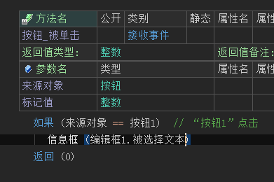
运行效果如下图：
最终可以看到选择区的文本会被弹出。
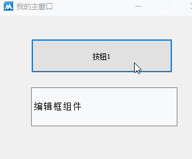
● 调节器方式 (写)
帮助文档如下图：
通过本属性可以设置编辑框组件变成数字调节器方式。
注意：本属性只能在设计器中，或者组件的属性表中使用，不能通过按钮点击等形式进行动态修改。
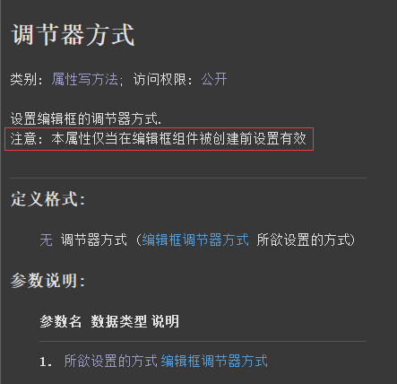
界面设计如下图：
选中编辑框组件，在右侧属性栏就可以调整本属性，调整后设计器会实时预览。
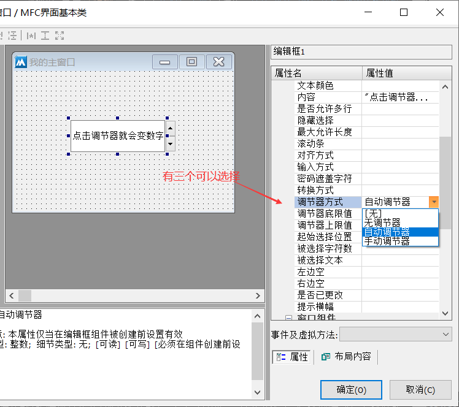
代码如下图：
保存界面后，会自动生成本属性代码。
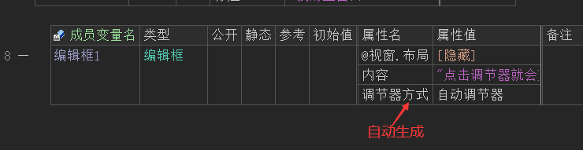
运行效果如下图：
可以看到虽然编辑框可以正常显示文本。
但是只要点击调节器按钮就会变成数字调节模式。
默认范围值0-100.
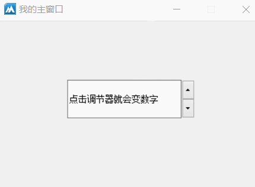
● 调节器上限值(写)
“调节器上限值”帮助文档如下图：
本属性用于设置调节的最大值，如果在调节的时候超过这个值，会自动调整为当前最小值。
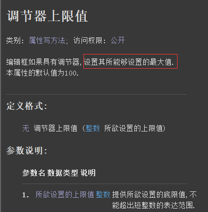
“调节器底限制”帮助文档如下图：
本属性用于设置调节器的最小值，如果低于这个值后会自动显示调节器的最大值。
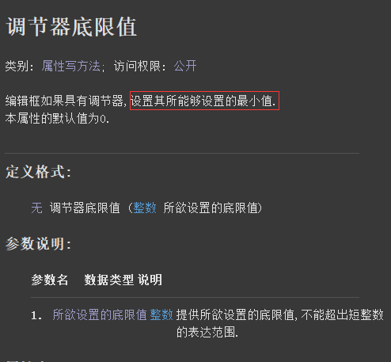
代码编写如下图：
在组件的属性栏分别设置这两个属性即可。
运行效果如下图：
可以看到数字调节器的范围被限制在了40-50之间。
● 起始选择位置 (写)
“起始选择位置”帮助文档如下图：
通过本属性可以设置起始选择位置，可用于选择文本操作。
位置从0开始，如果提供-1将光标移动到编辑框尾部。
“被选择字符数”帮助文档如下图：
本属性用于设置选择的字符数，需要配合“起始选择位置”属性使用。
如果提供-1则选择到编辑框尾部。
代码编写如下图：
如果想要通过按钮点击等形式执行选择文本，需要使用一下“获取焦点()”方法，否则将无法选中文本。
运行效果如下图：
最终可看到编辑框的文本被选中，位置是1到3。
● 转换方式(写)
帮助文档如下图：
本属性可用于大小写自动转换，可以省去用代码转换的繁琐步骤。
注意:本属性只能在设计器中使用，或者在组件的属性表格中使用。
界面设计如下图：
1、编辑框输入abc小写。
2、设置本属性选择为“小写到大写”，编辑框的内容会自动大写。
运行效果如下图：
除了内置字母会自动大写，并且在运行后输入的小写字母也会自动大写。
● 隐藏选择(写)
帮助文档如下图：
1、本属性用于设置当编辑框失去焦点后是否继续选中编辑框文本。
2、属性值提供真，失去焦点后将不再选择编辑框内的文本，否则继续保持选中状态。
注意：本属性只能在组件的属性栏设置。
代码编写如下图：
窗口上放两个编辑框并给其中一个编辑框设置本属性。
运行效果如下图：
左图：属性值为真的效果，可以看到切换焦点后，编辑框的选区被取消。
右图：属性值为假的效果，可以看到切换焦点后，编辑框选区依然存在。
● 提示横幅(写)
帮助文档如下图：
通过本属性可以设置编辑框为空文本时显示的提示信息。
注意：编辑框失去焦点后才能看到。
代码编写如下图：
在窗口上放两个编辑框，其中一个编辑框不设置内容并设置“提示横幅”属性。
运行效果如下图：
最终可以看到，当编辑框切换焦点后，没有内容的编辑框会显示一个提示信息。
● 删除
帮助文档如下图：
本方法可用户删除编辑框中被选中的文本。
代码编写如下图：
按钮点击后调用本方法即可。
运行效果如下图：
最终可看到当编辑框的选中文本会被删除，等同于按下了退格键。
● 剪切
帮助文档如下图：
通过本方法可以将选中的文本剪切到系统剪贴板中。
代码编写如下图：
按钮点击后调用本方法即可。
运行效果如下图：
最终可看在其它编辑框中可以粘贴，证明剪切成功。
● 粘贴
帮助文档如下图：
通过本方法可以将剪贴板中的文本粘贴到编辑框光标所处位置。
代码编写如下图：
按钮点击后，在剪贴板中置入一个文本数据，并指定粘贴方法。
运行效果如下图：
最终可看到置入到系统剪贴板的数据，被粘贴到了编辑框的光标所处位置。
● 加入文本
帮助文档如下图：
通过本方法可以在编辑框尾部添加文本数据。
代码编写如下图：
按钮点击后调用本方法就可以在编辑框尾部添加想要添加的文本。
运行效果如下图：
最终可以看到当按钮点击后编辑框尾部会增加文本。
● 加入文本行
帮助文档如下图：
通过本方法可以在编辑框的尾部添加一行文本，文本的结尾会自动增加换行符。
界面设计如下图：
想要实现多行文本添加，首先需要将编辑框的“是否允许多行”属性设置为真。
代码编写如下图：
按钮点击后调用本方法加入文本即可。
运行效果如下图：
最终可以看到文本是一行一行的添加的。
● 取字符所在行
帮助文档如下图：
通过本方法可以取出指定字符位置的所处行号。
注意：字符位置从0开始，0代表第一个字符。返回的行号也是从0开始。
代码编写如下图：
按钮点击后取出编辑框中提供的字符位置所处的行号。
运行效果如下图：
最终可以看到，提供字符位置5的时候，会返回0行，只有提供6才会返回1行。
这是因为第一行虽然看上去只有四个字符，但是换行符是占两个字符的“\r\n”。
因此在示例文本中想要返回1行，只有提供字符位置6，才会返回1行。
● 取行数
帮助文档如下图：
通过本方法可以取出当前编辑框的行数。
代码编写如下图：
按钮点击后调用本方法取出行数显示在信息框中。
运行效果如下图：
最终行数被取出。
●取行文本
帮助文档如下图：
通过本方法可以取出指定行号的行文本。
注意：行号从0开始。
代码编写如下图：
按钮点击后取出第一行的内容显示在信息框中。
运行效果如下图：
最终可看到第一行的内容被取出。
● 取行首位置
帮助文档如下图：
通过本方法可以取出指定行首个字符在整个编辑框中的字符索引位置。
代码编写如下图：
按钮点击后取出第三行首个字符的索引位置。
运行效果如下图：
最终字符位置被成功取出。
● 取首可视行
帮助文档如下图：
通过本方法可以取出编辑框中顶部第一行的可见行号。
注意：行号从0开始。
代码编写如下图：
按钮点击后取出首个可视行的行号。
运行效果如下图：
最终首个可视行被成功取出，滚动编辑框后首个可视行号也会随之改变。
● 可否撤销
帮助文档如下图：
通过本方法可以判断编辑框的内容是否可以进行撤销上一步的操作。
返回真表示可以撤销，返回假表示不能。
代码编写如下图：
按钮点击后判断本方法的返回值即可。
运行效果如下图：
最终可以看到当编辑框的内容进行删除操作后，就会提示可以撤销。
● 复制
帮助文档如下图：
通过本方法可以复制编辑框中被选择的内容。
代码编写如下图：
按钮点击后调用本方法复制即可。
运行效果如下图：
可以看到当按钮点击后，就可以在其它编辑框中粘贴，证明复制成功。
● 撤销
帮助文档如下图：
调用本方法可失效撤销编辑框的上一次操作。
比如增加内容后进行撤销可以将增加的内容重新删掉，删除内容后进行撤销可以将删除的内容恢复。
注意：本方法只能撤销最近一次的操作，无法进行多次撤销。
代码编写如下图：
按钮点击后执行本方法撤销。
运行效果如下图：
最终可以看到按钮点击后内容会被撤销。
● 显示气泡提示
“显示气泡提示”帮助文档如下图：
调用本方法可以在编辑上面显示一个提示气泡。
参数1：提供气泡标题。
参数2：提供要显示的气泡内容。
参数3：设置气泡图标，调用方式“编辑框气泡图标.XXX”。
“隐藏气泡提示”帮助文档如下图：
调用本方法可以将已经显示的气泡隐藏。
代码编写如下图：
按钮1点击后显示气泡。
按钮2点击后对气泡进行隐藏。
运行效果如下图：
最终可以看到气泡可以在隐藏和显示之间任意切换。
● 滚动
帮助文档如下图：
调用本方法可对编辑框的内容进行滚动操作。
提供正数向下滚动，提供负数向上滚动。
代码编写如下图：
按钮点击后向下滚动两行。
运行效果如下图：
最终可看到编辑框内容被滚动。
● 置左右边空
帮助文档如下图：
通过本方法可以给编辑框的左右两边同时设置空白区域。
代码编写如下图：
按钮点击后调用本方法分别给两边都设置10像素的空白。
运行效果如下图：
最终可看到编辑框左右两边产生了空白，证明设置成功。
● 置提示横幅
帮助文档如下图：
通过本方法可以设置编辑框内容为空的提示文本。
本方法与“提示横幅”属性不同的是，本方法还可以设置获得焦点的时候也显示提示横幅。
代码编写如下图：
按钮点击后调用本方法设置提示横幅，参数2提供真，让其在获得焦点的时候也显示提示横幅。
运行效果如下图：
最终可以看到编辑框内容有焦点的情况下也可以显示提示横幅。
● 选择文本
帮助文档如下图：
通过本方法可以对编辑框的文本进行选择。
参数1：提供起始位置，从0开始。
参数2：提供被选择的字符数。
代码编写如下图：
1、首先让编辑框获得焦点，起目的是为了让组件的焦点从按钮上转移到编辑框上。
2、焦点到编辑框后就可以执行选择文本操作，选择两个字符。
运行效果如下图：
最终可以看到编辑框中的前两个字符被选中。
● 静默置内容
“静默置内容”帮助文档如下图：
通过本方法设置内容可以不触发编辑框的“内容被改变”事件。
“内容被改变(事件)”帮助文档如下图：
当编辑框内容被改变的时候就会触发本事件。
但是如果通过“静默置内容()”方法设置就不会触发。
界面设计如下图：
在窗口上方一个按钮和两个编辑框。
并给其中一个编辑框设置滚动条和多行模式，方便接下来的效果演示。
代码编写如下图：
1、添加按钮被单击事件，调用“静默置内容”设置内容。
2、添加编辑框“内容被改变”事件，给编辑框2加入文本。
运行效果如下图：
最终当按钮点击改变编辑框1内容的时候，编辑框2不会增加内容，证明事件没有被触发。
● 调节钮被按下(事件)
帮助文档如下图：
当编辑框的调节钮被按下的时候会触发本事件。
参数返回1代表是上箭头按钮按下，否则为下箭头。
代码编写如下图：
1、首先设置编辑框的调节器为手动调节器。
2、然后添加“调节钮被按下”事件，并判断参数值来改变编辑框的内容。
运行效果如下图：
最终可看到当调节钮被按下的时候，编辑框的内容也会发生改变，证明事件被触发。